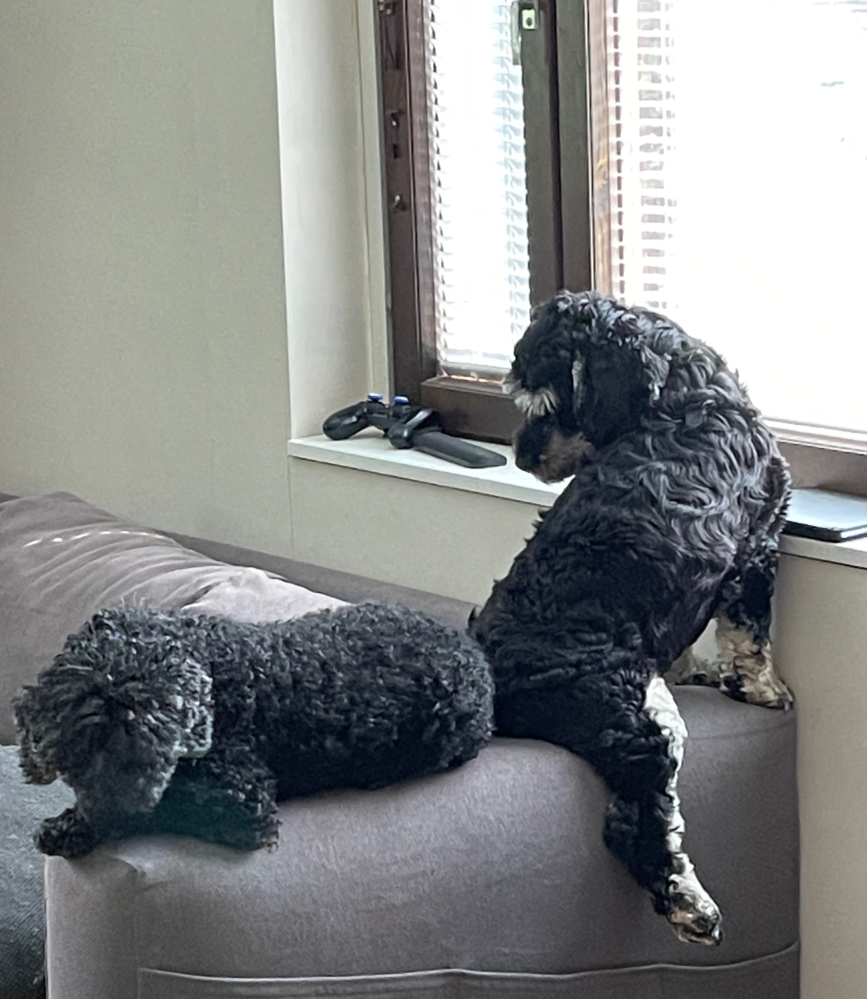

Me ollaan pariskunta Joensuusta. Ainakin siis vielä tällä hetkellä Joensuusta, koska koskaan ei tiiä
mitä sitä ensi viikko tuo tullessaan ja mitä myö keksitään. Mottoja meillä on kolme:
Tee sitä mistä nautit
Miks ei?
Mä oon kuka mä oon
Myö ollaan vaihettu kaupunkia ja ammattia sitä mukaan mikä on tuntunut hyvältä. Haaveena meillä on elää
minimalista elämää, tähän olemme pyrkimässä tällä hetkellä kovaa vauhtia. Yhtenä osana sitä ostimme äsken
retkeilyauton jolla ajellaan ympäri Suomea, koirat mukana totta kai.

Retkeilyauto auttaa meitä näkemään mitkä tavaroistamme on tarpeellisia ja mitkä ei ja mitä ilman voimme elää ihan hyvin
Pois ei olla suljettu sitäkään että asuisimme kokonaan retkeilyautossa tai tekisimme sille pidemmän reissun Eurooppaan.
Koodariksi opiskelu on osa sitä suunnitelmaa, näin ollen työt eivät olisi paikkaan sidonnaisia niinkuin ne nytten ovat.
Haaveita meillä on totta kai muitakin ja ne vaihtelee varmaan päivittäin mutta edetään pari kolme haavetta kerrallaan :)